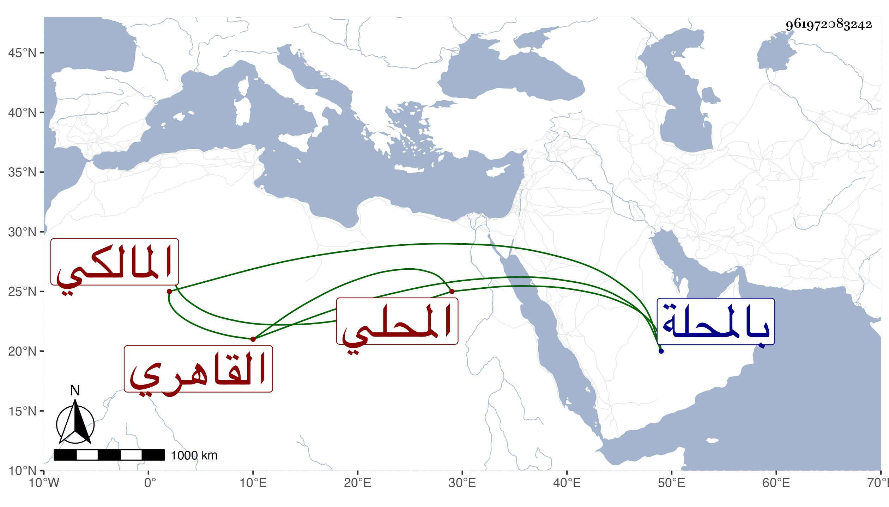

0902Sakhawi.DawLamic.ITO20230111-ara1.EIS1600.961972083242
Biography ID: 961972083242
465
محمد بن محمد بن قاسم بن عبد الله بن عبد الرحمن بن محمد بن عبد القادر الشرف بن كريم الدين أبي المكارم المحلي ثم القاهري المالكي الماضي أبوه وعمه الولوي وابنه قاسم . ولد سنة عشرين وثمانمائة تقريبا بالمحلة ونشأ بها فحفظ القرآن والعمدة والرسالة وعرض واشتغل قليلا وناب في القضاء بعد والده وحج في سنة سبعين وكان يقصدني كثيرا وحمدت عشرته ثم رجع ولم يلبث أن مات في التي تليها رحمه الله وعفا عنه .
